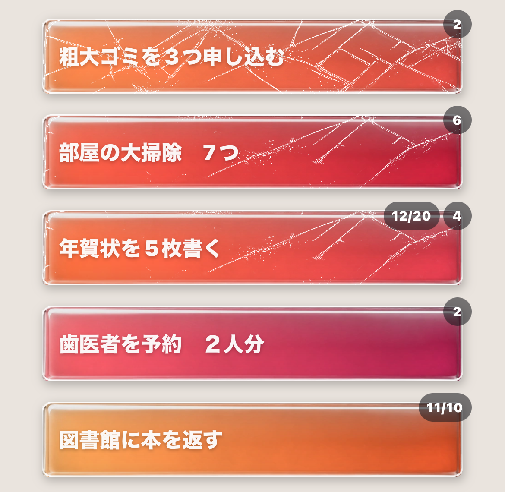
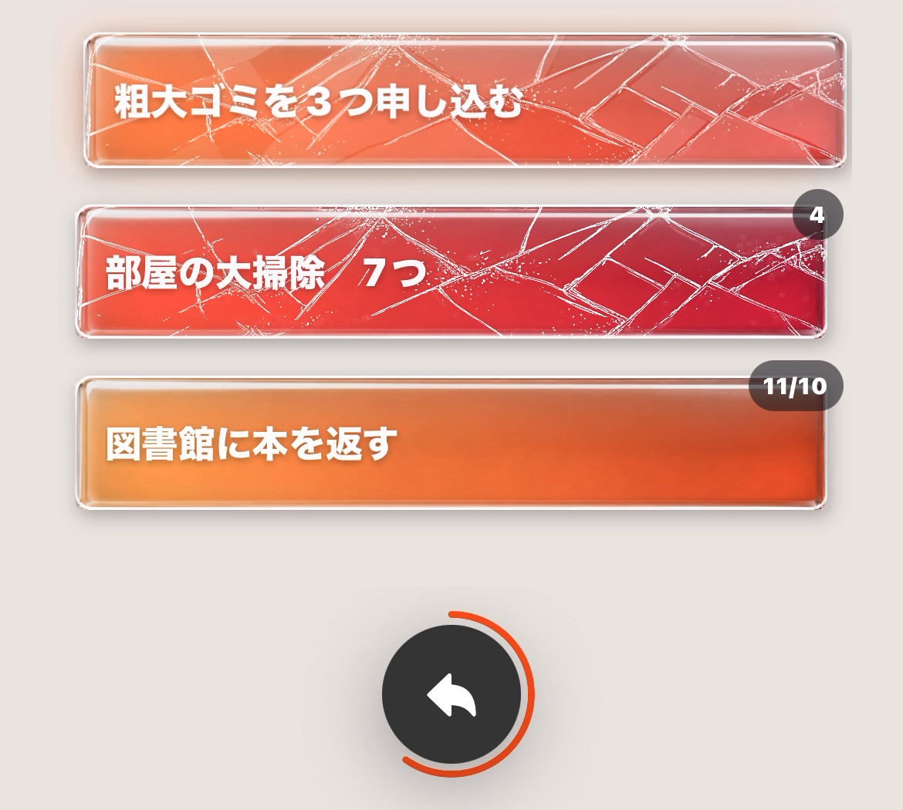
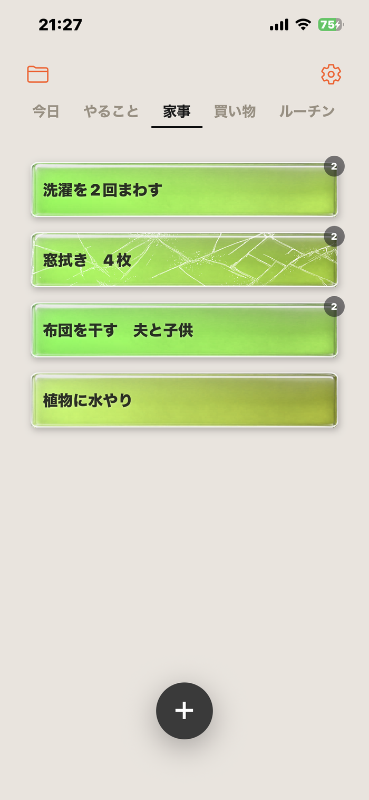
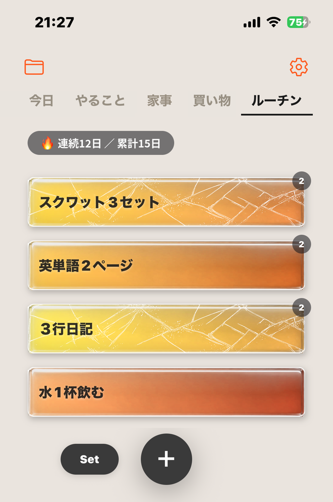
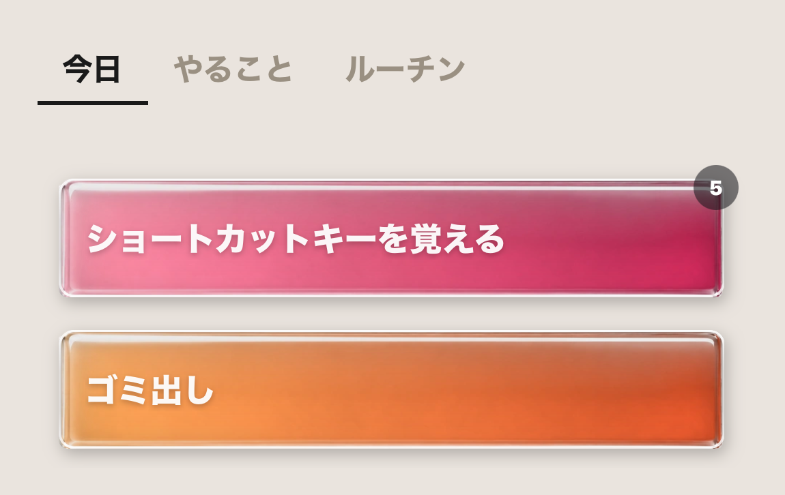
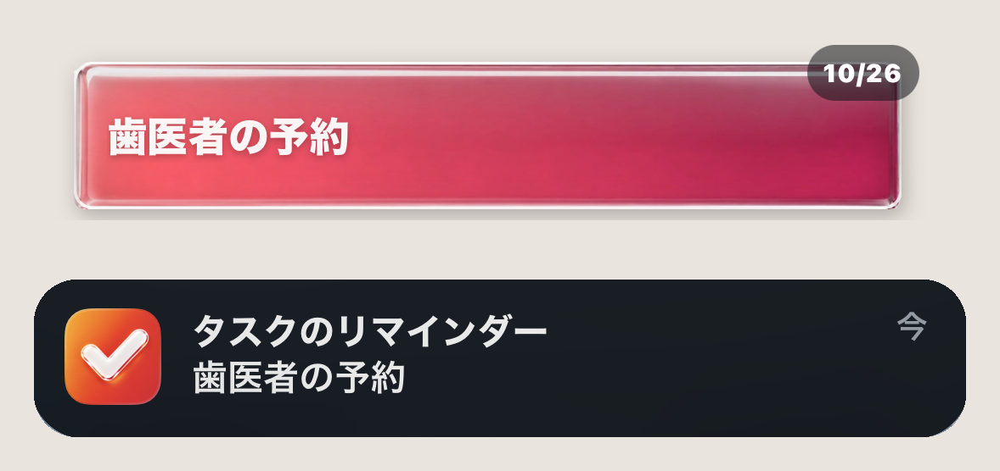
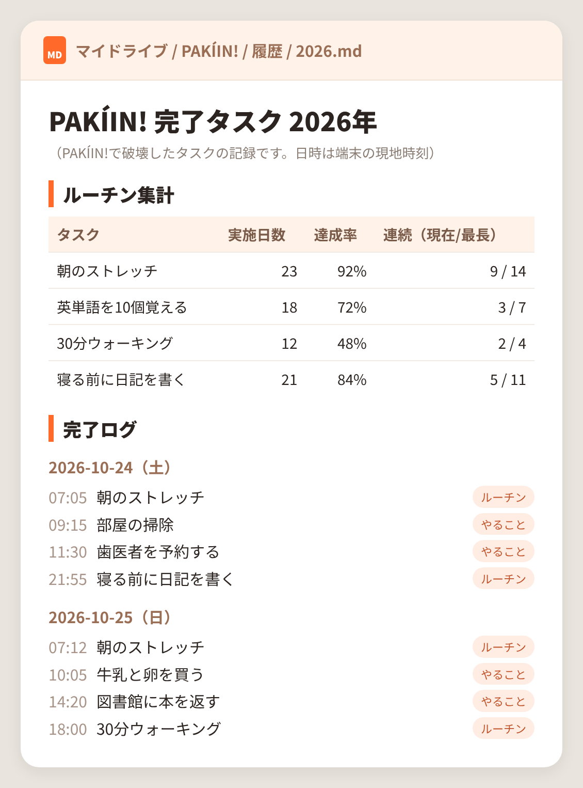
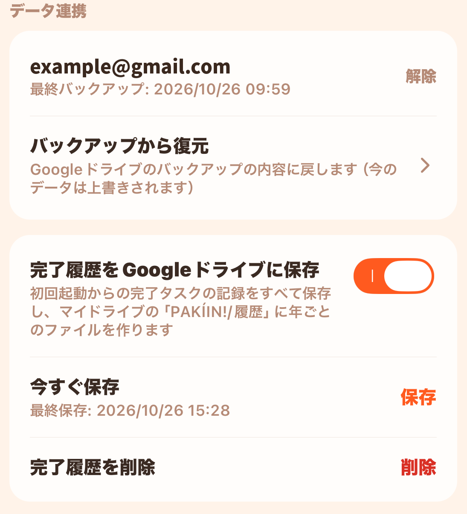

企画書を提出する3
1ひびなし
企画書を提出する
2
2ひび
企画書を提出する
1
3ひび拡大
パキーン！
01
タップで、ひび。最後のひと押しで、破裂。
タスクのカードをタップするたびにひびが広がり、最後のタップでガラスが弾け飛びます。
ひびの入り方は、タップした場所から広がります。
TRY IT
カードを3回タップすると、パキーン！
カードをタップしてみてください
FEATURES
タスクのカードをタップするたびにひびが広がり、最後のタップでガラスが弾け飛びます。
ひびの入り方は、タップした場所から広がります。

タスクごとに、割れるまでのタップ回数（1〜7回）を決められます。ちょっとした用事は1回で、大仕事は7回で。
重いタスクほど、割れたときの爽快感が大きくなります。

うっかり割ってしまっても、3秒以内なら「元に戻す」で、破片が集まってカードが元に戻ります。

仕事・家・買い物など、タスクをタブで分けられます。
タブごとにガラスの色を選べ、ガラスとマットの2つの質感から選べます。

毎日のルーチンを一度「セット」しておけば、
翌日は「スタート」を押すだけで、同じタスクがそろいます。
続けた日数も記録され、途切れそうな日には通知でお知らせします。

どのタブのタスクも、今日やるものだけを「今日」タブに集められます。

タスクに日時を設定すると、その時刻に通知でお知らせします。

※画面はイメージです
割ったタスクの名前と日時は、すべて記録されます。
設定でオンにすると、ご自身のGoogleドライブに年ごとのファイルとして保存されます。
ルーチンの継続日数や達成率も自動で集計されるので、
1年の振り返りや、AIに読み込ませての分析にも使えます。

機種変更やアプリの再インストールのときも、
ご自身のGoogleドライブから、タスクとタブを復元できます。
（任意機能）
PRICE
¥200
¥400
必要なものだけ選べます。一度買えばずっと使えます。購入の復元にも対応しています。
SAFE
登録なしで、すぐ使える。
タスクは、あなたのスマホの中だけ。
画面をふさぐ広告は出ません。
FAQ
タスク10件・タブ2つまで無料で使えます。
Googleドライブのバックアップをオンにしていれば、新しい端末で復元できます。
同じApple IDなら、設定画面の「購入の復元」で使えます。
現在はiPhone（iOS）のみです。
設定画面で、それぞれオン・オフできます。